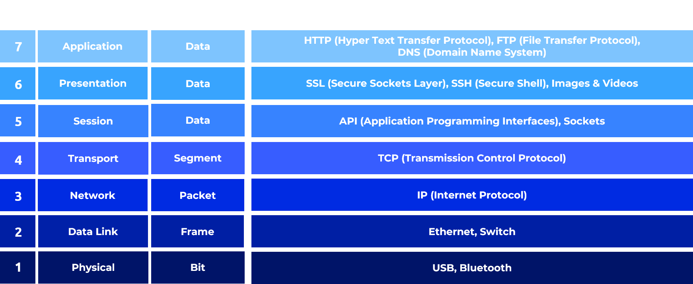

CopyTech
Open Systems Interconnection (OSI) Model
Zum ausdrucken (STRG + P)
Was ist das OSI Model
Das OSI-Modell steht für "Open Systems Interconnection" und ist ein Konzept, das in der Informatik und Netzwerktechnik verwendet wird. Es beschreibt eine theoretische Grundlage für die Gestaltung und den Betrieb von Netzwerken. Das Modell teilt die Kommunikation in sieben verschiedene Schichten oder Layer auf, von der physischen Verbindung bis zur Anwendungssoftware. Jede Schicht hat spezifische Funktionen und Aufgaben, die zur effizienten Datenübertragung beitragen. Das OSI-Modell dient als Referenzrahmen, um die Interoperabilität verschiedener Netzwerktechnologien sicherzustellen. Layer 1 - 4 sind die Transportorientierte Schichten und Layer 5 - 7 die Anwendungsorientierte Schichten

Physical Layer
Die Physical Layer ist die unterste Schicht des OSI-Modells. Sie ist für die physische Verbindung und Übertragung von Daten verantwortlich. Dies umfasst die Übertragung von elektrischen Signalen über Kabel oder die Ausstrahlung von Funkwellen. Beispiele für Protokolle und Geräte in dieser Schicht sind:
Data Link Layer
Der Data Link Layer ist für die Fehlererkennung und -korrektur sowie für die Adressierung von Geräten in einem lokalen Netzwerk verantwortlich. Beispiele für Protokolle und Geräte sind:
Network Layer
Die Network Layer ist für die Wegfindung und Weiterleitung von Datenpaketen verantwortlich. Beispiele für Protokolle und Geräte sind:
Transport Layer
Der Transport Layer ist für die Ende-zu-Ende-Kommunikation und die Zuverlässigkeit der Datenübertragung verantwortlich. Beispiele für Protokolle und Geräte sind:
Session Layer
Der Session Layer ermöglicht die Verwaltung und Synchronisation von Sitzungen zwischen Anwendungen. Er sorgt für den Aufbau, die Aufrechterhaltung und das Beenden von Kommunikationssitzungen. Beispiele für diese Schicht sind:
Presentation Layer
Die Presentation Layer kümmert sich um die Datenformatierung und -übersetzung, um sicherzustellen, dass unterschiedliche Systeme miteinander kommunizieren können. Sie bietet auch Verschlüsselung und Datenkompression. Beispiele für Protokolle und Geräte sind:
Application Layer
Die Application Layer ist die oberste Schicht und stellt Schnittstellen für Anwendungen und Dienste bereit. Hier arbeiten Anwendungen wie Webbrowser, E-Mail-Clients und Dateiübertragungsprogramme. Beispiele für Protokolle und Dienste in dieser Schicht sind: